# load packages (installs missing ones, then attaches)
pacman::p_load(sf, sfdep, tmap, tidyverse) # sf for spatial data; sfdep for spatial stats;
# tmap for mapping; tidyverse for wrangling/ggplotHands-on Ex5b
10 Local Measures of Spatial Autocorrelation
10.1 Overview
We will import geospatial and aspatial data for Hunan Province (county level), join attributes, visualise a regional indicator (GDP per capita, GDPPC), build contiguity and distance spatial weights, and compute two local spatial statistics:
- Local Moran’s I (LISA) for cluster/outlier detection.
- Getis–Ord Gi* for Hot/Cold Spot analysis (HCSA).
We will then create choropleths for I values, \(p\)-values, LISA clusters (\(p < 0.05%\)), and HCSA clusters (\(p < 0.05\)), plus Moran scatterplots (raw and standardised).
10.2 Getting Started
10.2.1 The analytical question
In spatial policy, one of the main development objective of the local govenment and planners is to ensure equal distribution of development in the province. Our task in this study, hence, is to apply appropriate spatial statistical methods to discover if development are even distributed geographically. If the answer is No. Then, our next question will be “is there sign of spatial clustering?”. And, if the answer for this question is yes, then our next question will be “where are these clusters?”
In this case study, we are interested to examine the spatial pattern of a selected development indicator (i.e. GDP per capita) of Hunan Provice, People Republic of China.(https://en.wikipedia.org/wiki/Hunan)
10.2.2 Study area and data
Two data sets will be used in this hands-on exercise, they are:
- Hunan province administrative boundary layer at county level (Geospatial). This is a geospatial data set in ESRI shapefile format.
- Hunan_2012.csv (Aspatial): This csv file contains selected Hunan’s local development indicators in 2012.
10.2.3 Analytical tools
10.3 Getting the data into R
# --- 10.3.1 Import shapefile into R environment -----------------------------
hunan <-
st_read( # read a spatial layer from disk
dsn = "data/geospatial", # folder containing the shapefile set
layer = "Hunan" # layer name (without .shp)
) %>%
# reproject from WGS84 to UTM zone 50N (EPSG:32650)
# (projected CRS is recommended for spatial analysis)
st_transform(crs = 32650) Reading layer `Hunan' from data source
`/Users/cktan/Desktop/SMU/01_Geospatial Analytics (ISSS626)/Hands-on_Ex/Hands-on_Ex05/data/geospatial'
using driver `ESRI Shapefile'
Simple feature collection with 88 features and 7 fields
Geometry type: POLYGON
Dimension: XY
Bounding box: xmin: 108.7831 ymin: 24.6342 xmax: 114.2544 ymax: 30.12812
Geodetic CRS: WGS 84
Tip
The raw data is in WGS 84 geographic coordinates system. For geospatial analysis, it is appropriate to use projected coordinates system. In the code chunk above, st_transform() is used to transform Hunan geospatial data from WGS 84 to UTM zone 50N (i.e. EPSG: 32650).
# --- 10.3.2 Import CSV into R environment ----------------------------------
hunan2012 <-
readr::read_csv("data/aspatial/Hunan_2012.csv") # read the attribute table (tabular CSV)Rows: 88 Columns: 29
── Column specification ────────────────────────────────────────────────────────
Delimiter: ","
chr (2): County, City
dbl (27): avg_wage, deposite, FAI, Gov_Rev, Gov_Exp, GDP, GDPPC, GIO, Loan, ...
ℹ Use `spec()` to retrieve the full column specification for this data.
ℹ Specify the column types or set `show_col_types = FALSE` to quiet this message.# --- 10.3.3 Join attributes into the sf object ------------------------------
hunan <-
left_join(hunan, hunan2012) %>% # left join by the shared key column(s) (kept from shapefile)
select(1:4, 7, 15) # keep only the columns used in this exercise (as per lesson)Joining with `by = join_by(County)`10.3.4 Visualising the regional indicator (equal vs quantile)
equal <- tm_shape(hunan) +
tm_polygons(fill = "GDPPC",
fill.scale = tm_scale_intervals(
style = "equal",
n = 5,
values = "brewer.blues"),
fill.legend = tm_legend(
title = "GDPPC",
position = tm_pos_in(
"left", "bottom"))) +
tm_borders(fill_alpha = 0.5) +
tm_title("Equal interval classification")
quantile <- tm_shape(hunan) +
tm_polygons(fill = "GDPPC",
fill.scale = tm_scale_intervals(
style = "quantile",
n = 5,
values = "brewer.blues"),
fill.legend = tm_legend(
title = "GDPPC",
position = tm_pos_in(
"left", "bottom"))) +
tm_borders(fill_alpha = 0.5) +
tm_title("Quantile interval classification")
tmap_arrange(equal,
quantile,
asp=1,
ncol=2)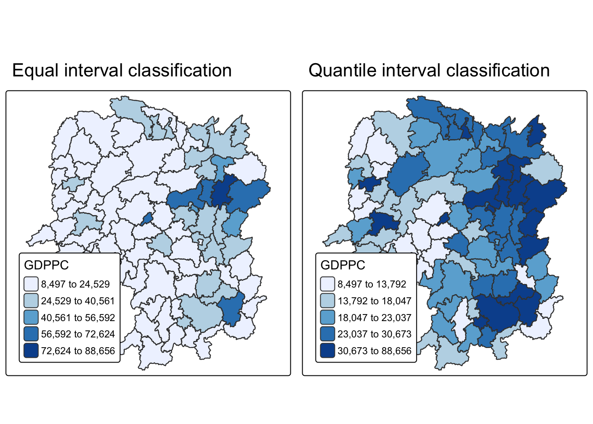
In summary: The classification maps are useful exploratory tools. Quantile classification reveals stronger visual contrasts, hinting at clusters of rich and poor counties. But to answer definitively about outliers or hot/cold spots, we must proceed to LISA (Local Moran’s I) and HCSA (Getis–Ord Gi) analyses.
10.4 Local Indicators of Spatial Association (LISA)
10.4.1 Compute contiguity neighbours and row-standardised weights
# Create Queen-contiguity neighbours and W-style weights (row-standardised)
wm_q <- hunan %>%
mutate(
nb = st_contiguity(geometry), # build a neighbours list from touching polygons (Queen)
wt = st_weights(nb, style = "W"), # row-standardised weights (sum of weights = 1 per region)
.before = 1 # place the new columns at the beginning (professor's style)
)
# Inspect the neighbour structure (how many neighbours per county)
summary(wm_q$nb) # prints count distribution, min/max, and average linksNeighbour list object:
Number of regions: 88
Number of nonzero links: 448
Percentage nonzero weights: 5.785124
Average number of links: 5.090909
Link number distribution:
1 2 3 4 5 6 7 8 9 11
2 2 12 16 24 14 11 4 2 1
2 least connected regions:
30 65 with 1 link
1 most connected region:
85 with 11 linksThe summary report above shows that there are 88 area units in Hunan. The most connected area unit has 11 neighbours. There are two area units with only one neighbour.
10.4.3 Compute Local Moran’s I (permutation nsim = 99)
lisa <- wm_q %>%
mutate(local_moran = local_moran(
GDPPC, nb, wt, nsim = 99),
.before = 1) %>%
unnest(local_moran)local_moran() function returns a matrix of values whose columns are:
- li: the local Moran’s I statistics
- E.li: the expectation of local moran statistic under the randomisation hypothesis
- Var.li: the variance of local moran statistic under the randomisation hypothesis
- Z.Ii:the standard deviate of local moran statistic
- Pr(): the p-value of local moran statistic
glimpse(lisa)Rows: 88
Columns: 21
$ ii <dbl> -1.468468e-03, 2.587817e-02, -1.198765e-02, 1.022468e-03,…
$ eii <dbl> -8.148464e-04, -9.932206e-03, -2.929856e-02, -9.398322e-0…
$ var_ii <dbl> 4.589734e-04, 1.136942e-02, 9.800257e-02, 4.136778e-06, 1…
$ z_ii <dbl> -0.03050932, 0.33584570, 0.05529697, 0.54891935, 0.270022…
$ p_ii <dbl> 9.756609e-01, 7.369872e-01, 9.559019e-01, 5.830608e-01, 7…
$ p_ii_sim <dbl> 0.84, 0.98, 0.68, 0.52, 0.68, 0.86, 0.06, 0.06, 0.02, 0.2…
$ p_folded_sim <dbl> 0.42, 0.49, 0.34, 0.26, 0.34, 0.43, 0.03, 0.03, 0.01, 0.1…
$ skewness <dbl> -0.6165755, -0.9102915, 0.7574819, 0.9515344, 0.7445666, …
$ kurtosis <dbl> -0.5321037, 0.4113895, -0.1561211, 0.8700892, 0.1347678, …
$ mean <fct> Low-High, Low-Low, High-Low, High-High, High-High, High-L…
$ median <fct> High-High, High-High, High-High, High-High, High-High, Hi…
$ pysal <fct> Low-High, Low-Low, High-Low, High-High, High-High, High-L…
$ nb <nb> <2, 3, 4, 57, 85>, <1, 57, 58, 78, 85>, <1, 4, 5, 85>, <1,…
$ wt <list> <0.2, 0.2, 0.2, 0.2, 0.2>, <0.2, 0.2, 0.2, 0.2, 0.2>, <0…
$ NAME_2 <chr> "Changde", "Changde", "Changde", "Changde", "Changde", "C…
$ ID_3 <int> 21098, 21100, 21101, 21102, 21103, 21104, 21109, 21110, 2…
$ NAME_3 <chr> "Anxiang", "Hanshou", "Jinshi", "Li", "Linli", "Shimen", …
$ ENGTYPE_3 <chr> "County", "County", "County City", "County", "County", "C…
$ County <chr> "Anxiang", "Hanshou", "Jinshi", "Li", "Linli", "Shimen", …
$ GDPPC <dbl> 23667, 20981, 34592, 24473, 25554, 27137, 63118, 62202, 7…
$ geometry <POLYGON [m]> POLYGON ((22320.48 3301894,..., POLYGON ((35522.9…10.4.3.2 Mapping local Moran’s I values
tm_shape(lisa) +
tm_polygons(fill = "ii",
fill.scale = tm_scale_intervals(
style = "pretty",
n = 5,
values = "brewer.RdBu"),
fill.legend = tm_legend(
title = "Local Morans'I",
position = tm_pos_out())) +
tm_borders(fill_alpha = 0.5) +
tm_title("Loal Morans'I of GDPPC (Queen's method)")[scale] tm_polygons:() the data variable assigned to 'fill' contains positive and negative values, so midpoint is set to 0. Set 'midpoint = NA' in 'fill.scale = tm_scale_intervals(<HERE>)' to use all visual values (e.g. colors)[cols4all] color palettes: use palettes from the R package cols4all. Run
`cols4all::c4a_gui()` to explore them. The old palette name "brewer.RdBu" is
named "rd_bu" (in long format "brewer.rd_bu")
[plot mode] fit legend/component: Some legend items or map compoments do not
fit well, and are therefore rescaled.
ℹ Set the tmap option `component.autoscale = FALSE` to disable rescaling.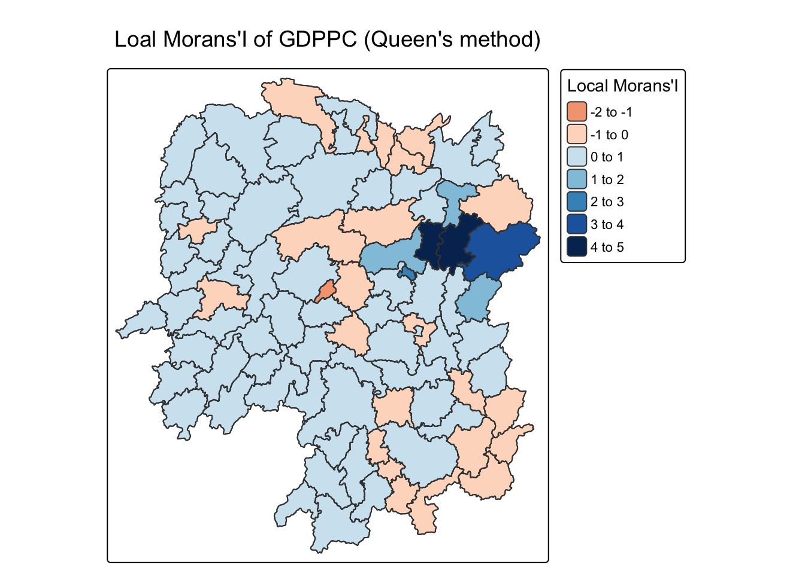
10.4.3.3 Mapping local Moran’s I p-values
tm_shape(lisa) +
tm_polygons(fill = "p_ii",
fill.scale = tm_scale_intervals(
breaks = c(-Inf, 0.001, 0.01, 0.05, 0.1, Inf),
values = "-brewer.Reds"),
fill.legend = tm_legend(
title = "p-value",
position = tm_pos_out())) +
tm_borders(fill_alpha = 0.5) +
tm_title("p-values of Loal Moran's I of GDPPC (Queen's method)")[cols4all] color palettes: use palettes from the R package cols4all. Run
`cols4all::c4a_gui()` to explore them. The old palette name "-brewer.Reds" is
named "reds" (in long format "brewer.reds")
[plot mode] fit legend/component: Some legend items or map compoments do not
fit well, and are therefore rescaled.
ℹ Set the tmap option `component.autoscale = FALSE` to disable rescaling.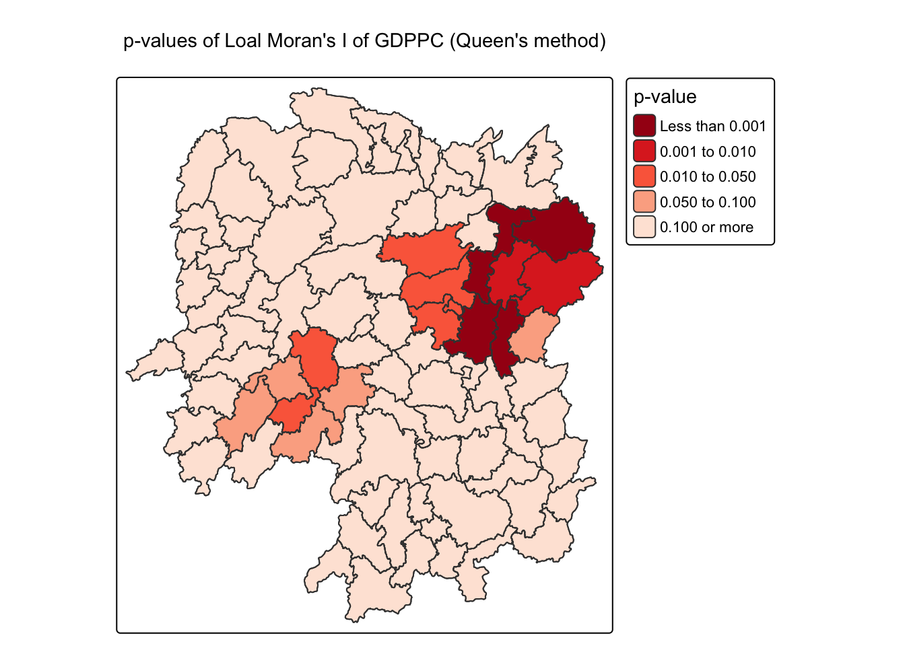
10.4.3.4 Mapping both local Moran’s I values and \(p\)-values
ii.map <- tm_shape(lisa) +
tm_polygons(fill = "ii",
fill.scale = tm_scale_intervals(
style = "pretty",
n = 5,
values = "brewer.RdBu"),
fill.legend = tm_legend(
title = "Local Moran's I",
position = tm_pos_in(
"left", "bottom"))) +
tm_borders(fill_alpha = 0.5) +
tm_title("Loal Moran's I of GDPPC (Queen's method)")
p_ii.map <- tm_shape(lisa) +
tm_polygons(fill = "p_ii",
fill.scale = tm_scale_intervals(
breaks = c(-Inf, 0.001, 0.01, 0.05, 0.1, Inf),
values = "-brewer.Reds"),
fill.legend = tm_legend(
title = "p-value",
position = tm_pos_in("left", "bottom")
)) +
tm_borders(fill_alpha = 0.5) +
tm_title("p-values of Loal Moran's I of GDPPC (Queen's method)")
tmap_arrange(ii.map, p_ii.map, asp=1, ncol=2)[scale] tm_polygons:() the data variable assigned to 'fill' contains positive and negative values, so midpoint is set to 0. Set 'midpoint = NA' in 'fill.scale = tm_scale_intervals(<HERE>)' to use all visual values (e.g. colors)[cols4all] color palettes: use palettes from the R package cols4all. Run
`cols4all::c4a_gui()` to explore them. The old palette name "brewer.RdBu" is
named "rd_bu" (in long format "brewer.rd_bu")
[plot mode] fit legend/component: Some legend items or map compoments do not
fit well, and are therefore rescaled.
ℹ Set the tmap option `component.autoscale = FALSE` to disable rescaling.
[cols4all] color palettes: use palettes from the R package cols4all. Run
`cols4all::c4a_gui()` to explore them. The old palette name "-brewer.Reds" is
named "reds" (in long format "brewer.reds")
[plot mode] fit legend/component: Some legend items or map compoments do not
fit well, and are therefore rescaled.
ℹ Set the tmap option `component.autoscale = FALSE` to disable rescaling.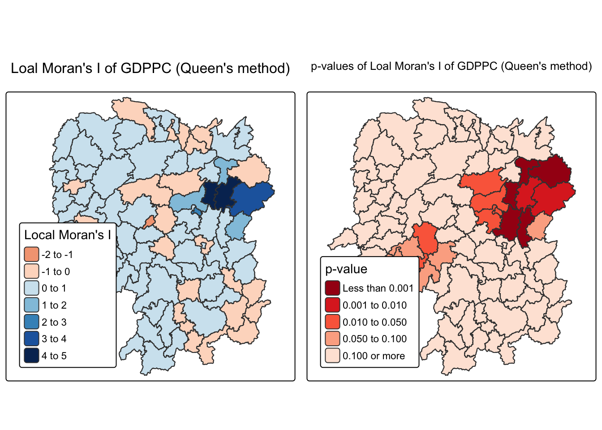
10.4.4 Preparing and Visualising LISA Map
10.4.4.1 Plotting Moran scatterplot
# --- Compute spatial lag for GDPPC (needed for Moran scatterplot) -----------
lisa <- lisa %>%
mutate(lag_GDPPC = st_lag(
GDPPC, nb, wt),
.before = 1) %>%
unnest(lag_GDPPC)# --- Moran scatterplot (raw values) ----------------------------------------
ggplot(data = lisa,
aes(x = GDPPC,
y = lag_GDPPC)) +
geom_point() +
geom_smooth(method = "lm",
se = FALSE,
color = "red") +
labs(x = "GDPPC",
y = "Spatial Lag of GDPPC",
title = "Moran Scatterplot") +
theme_minimal()`geom_smooth()` using formula = 'y ~ x'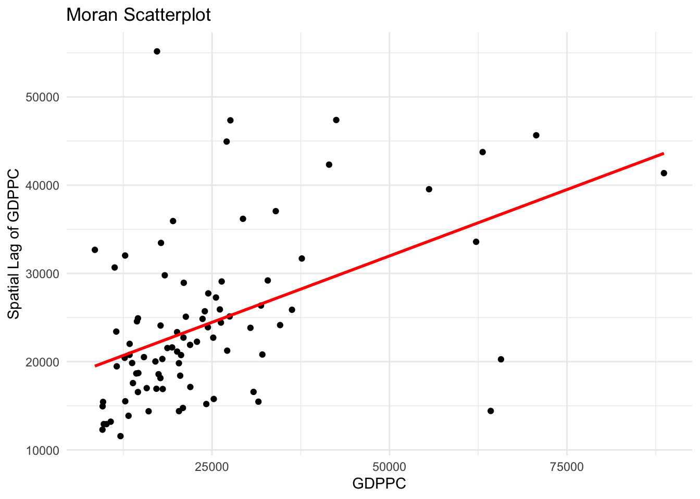
ggplot(data = lisa,
aes(x = GDPPC,
y = lag_GDPPC,
color = mean)) +
geom_point(size = 2) +
geom_smooth(method = "lm",
se = FALSE,
color = "black") +
geom_hline(yintercept=mean(lisa$lag_GDPPC), lty=2) +
geom_vline(xintercept=mean(lisa$GDPPC), lty=2) +
scale_color_manual(
values = c("High-High" = "red",
"Low-Low" = "blue",
"Low-High" = "lightblue",
"High-Low" = "pink")) +
labs(x = "GDPPC",
y = "Spatial Lag of GDPPC",
title = "Moran Scatterplot with LISA Quadrants") +
theme_minimal()`geom_smooth()` using formula = 'y ~ x'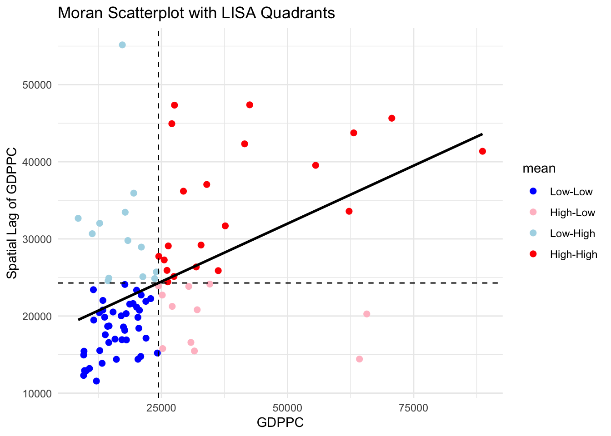
10.4.4.2 Plotting Moran scatterplot with standardised variable
# Standardise GDPPC and its spatial lag (z-scores)
lisa <- lisa %>%
mutate(
z_GDPPC = scale(GDPPC), # centre & scale GDPPC
z_lag_GDPPC = scale(lag_GDPPC), # centre & scale spatial lag
.before = 1
)# Standardised Moran scatterplot with LISA quadrants
ggplot(data = lisa,
aes(x = z_GDPPC, y = z_lag_GDPPC, color = mean)) +
geom_point(size = 2) +
geom_smooth(method = "lm", se = FALSE, color = "black") +
geom_hline(yintercept = mean(lisa$z_lag_GDPPC), lty = 2) +
geom_vline(xintercept = mean(lisa$z_GDPPC), lty = 2) +
scale_color_manual(values = c("High-High" = "red",
"Low-Low" = "blue",
"Low-High" = "lightblue",
"High-Low" = "pink")) +
labs(x = "Standardised GDPPC",
y = "Standardised Spatial Lag of GDPPC",
title = "Standardised Moran Scatterplot with LISA Quadrants") +
theme_minimal()`geom_smooth()` using formula = 'y ~ x'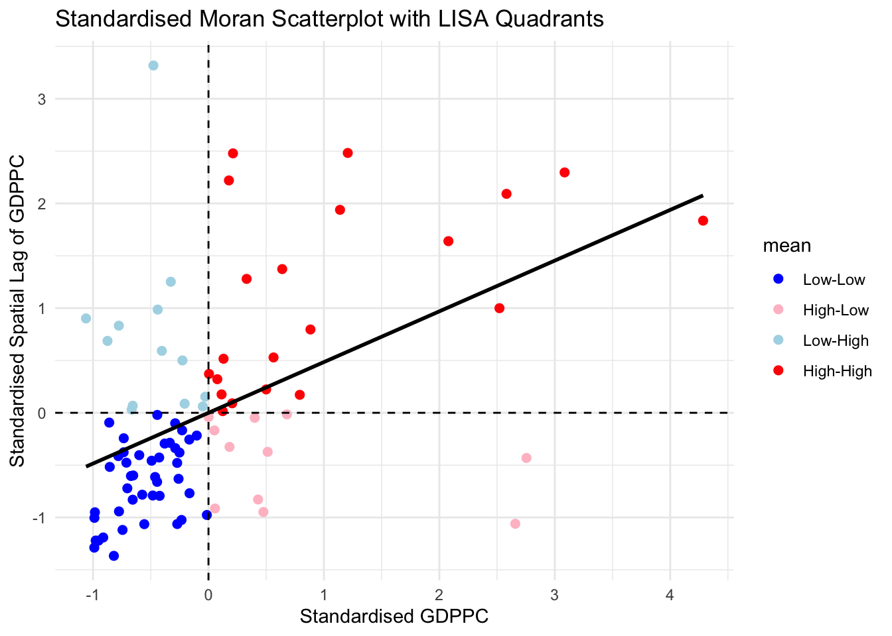
10.4.4.3 Preparing LISA map classes
# Significance threshold used by the professor
signif <- 0.0510.4.4.4 Plotting and visualising LISA map
# Build the display class for the LISA cluster map (keep only significant locations)
lisa <- lisa %>%
mutate(
LISA_cluster = ifelse(p_ii < signif, as.character(mean), "Insignificant"),
LISA_cluster = factor(LISA_cluster,
levels = c("Insignificant","Low-Low","Low-High","High-Low","High-High"))
)lisa_map <- tm_shape(lisa) +
tm_polygons(
fill = "LISA_cluster",
fill.scale = tm_scale_categorical(
values = c("grey80", # Insignificant
"blue", # Low-Low
"lightblue", # Low-High
"pink", # High-Low
"red") # High-High
),
fill.legend = tm_legend(title = "LISA Cluster",
position = tm_pos_in("left","bottom"))
) +
tm_borders() +
tm_title("Local Moran's I Clusters (p < 0.05)")
lisa_map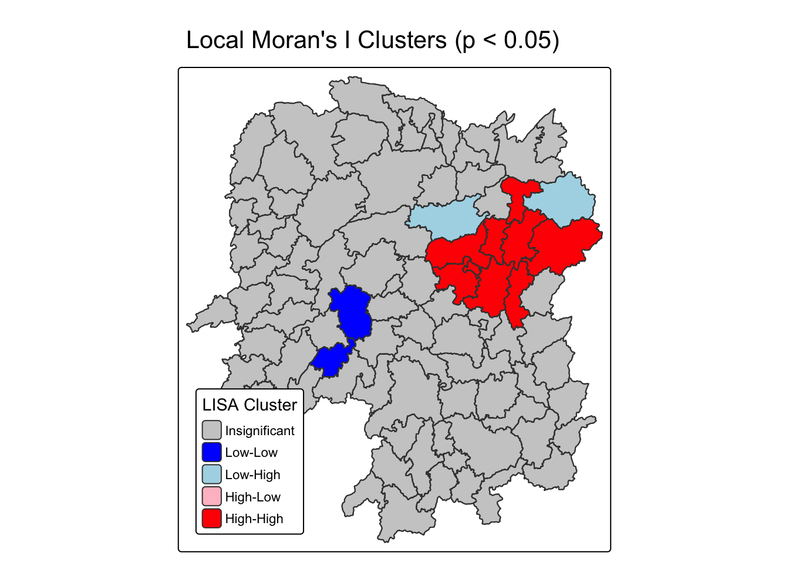
# --- Side-by-side visualisation: Local Moran's I map + LISA Cluster map ----
# Assumes `lisa` already exists from 10.4.3/10.4.4 and contains:
# - ii : Local Moran's I statistic
# - p_ii : permutation p-values
# - mean : LISA quadrant label (High-High, Low-Low, etc.)
# - LISA_cluster : factor with levels c("Insignificant","Low-Low","Low-High","High-Low","High-High")
# 1) Choropleth of Local Moran's I (Queen's method), using a diverging palette
ii.map <- tm_shape(lisa) + # provide sf object
tm_polygons(fill = "ii", # map the I statistic
fill.scale = tm_scale_intervals( # classing method and palette
style = "pretty", # 'pretty' breaks (as in slides)
n = 5, # 5 classes
values = "brewer.RdBu" # diverging red–blue palette
),
fill.legend = tm_legend( # legend style
title = "Local Moran's I",
position = tm_pos_in("left","bottom") # inside, left–bottom
)) +
tm_borders(fill_alpha = 0.5) + # light border/fill alpha
tm_title("Loal Moran's I of GDPPC (Queen's method)") # title (kept as in slide)
# 2) Choropleth of LISA clusters (significant at p < 0.05)
lisa_map <- tm_shape(lisa) + # same sf object
tm_polygons(
fill = "LISA_cluster", # categorical cluster label
fill.scale = tm_scale_categorical( # fixed colours per category
values = c("grey80", # Insignificant
"blue", # Low-Low
"lightblue", # Low-High
"pink", # High-Low
"red") # High-High
),
fill.legend = tm_legend( # legend style
title = "LISA Cluster",
position = tm_pos_in("left","bottom")
)
) +
tm_borders() + # polygon borders
tm_title("Local Moran's I Clusters (p < 0.05)") # map title
# 3) Arrange the two maps side by side for comparison
tmap_arrange(ii.map, lisa_map, asp = 1, ncol = 2) # equal aspect; two columns[scale] tm_polygons:() the data variable assigned to 'fill' contains positive and negative values, so midpoint is set to 0. Set 'midpoint = NA' in 'fill.scale = tm_scale_intervals(<HERE>)' to use all visual values (e.g. colors)[cols4all] color palettes: use palettes from the R package cols4all. Run
`cols4all::c4a_gui()` to explore them. The old palette name "brewer.RdBu" is
named "rd_bu" (in long format "brewer.rd_bu")
[plot mode] fit legend/component: Some legend items or map compoments do not
fit well, and are therefore rescaled.
ℹ Set the tmap option `component.autoscale = FALSE` to disable rescaling.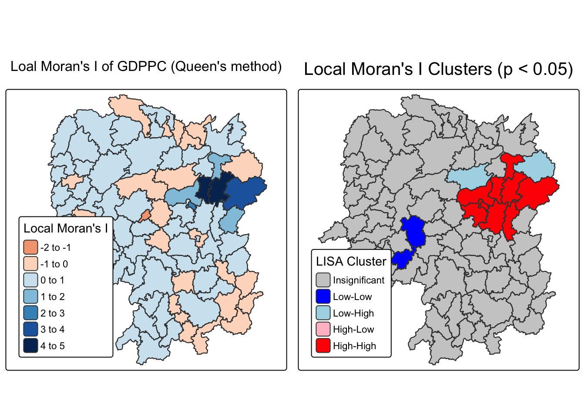
10.5 Hot Spots and Cold Spots Analysis (HCSA)
10.5.1 Deriving distance weight matrix (fixed band with self-inclusion)
10.5.1.1 Computing fixed distance weights
ct <- critical_threshold(st_geometry(hunan)) # ensure ≥ 1 neighbourWarning in spdep::knn2nb(spdep::knearneigh(pnts, k)): neighbour object has 25
sub-graphsct[1] 60799.9110.5.1.1 Computing fixed distance weights
hunan_fdw <- hunan %>%
mutate(
nb = include_self(st_dist_band(st_geometry(geometry), upper = ct)),
wt = st_weights(nb, style = "W"),
.before = 1
)! Polygon provided. Using point on surface.10.5.1.2 Computing adaptive distance weights
hunan_adw <- hunan %>%
mutate(nb = include_self(
st_knn(
st_geometry(geometry),
k = 6)),
wt = st_weights(
nb, style = "W"),
.before = 1)! Polygon provided. Using point on surface.10.5.2 Computing local Gi*
HCSA_fdw <- hunan_fdw %>%
mutate(
gistar = local_gstar_perm(
GDPPC, nb, wt, nsim = 99),
.before = 1) %>%
unnest(gistar)10.5.3 Preparing and Visualising HCSA Map
10.5.3.1 Mapping Gi* with fix distance weights
tm_shape(HCSA_fdw) +
tm_polygons(fill = "gi_star",
fill.scale = tm_scale_intervals(
style = "pretty",
n = 6,
values = "brewer.rd_bu"),
fill.legend = tm_legend(
title = "Gi*",
position = tm_pos_out())) +
tm_borders(fill_alpha = 0.5) +
tm_title("Gi* of GDPPC (Fixed Bandwidth d = 60799.91m)")[scale] tm_polygons:() the data variable assigned to 'fill' contains positive and negative values, so midpoint is set to 0. Set 'midpoint = NA' in 'fill.scale = tm_scale_intervals(<HERE>)' to use all visual values (e.g. colors)[plot mode] fit legend/component: Some legend items or map compoments do not
fit well, and are therefore rescaled.
ℹ Set the tmap option `component.autoscale = FALSE` to disable rescaling.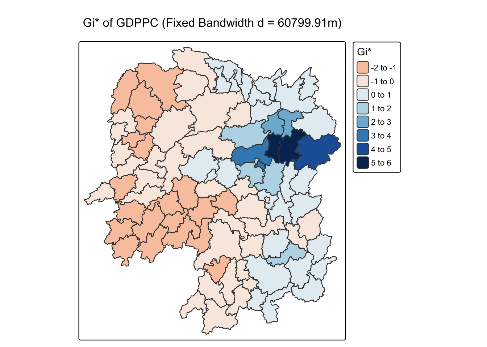
10.5.3.2 Mapping local Gi* p-values
tm_shape(HCSA_fdw) +
tm_polygons(fill = "p_sim",
fill.scale = tm_scale_intervals(
breaks = c(-Inf, 0.001, 0.01, 0.05, 0.1, Inf),
values = "-brewer.Reds"),
fill.legend = tm_legend(
title = "simulated p-value",
position = tm_pos_out())) +
tm_borders(fill_alpha = 0.5) +
tm_title("p-values of local Gi* of GDPPC (Fixed distance)")[cols4all] color palettes: use palettes from the R package cols4all. Run
`cols4all::c4a_gui()` to explore them. The old palette name "-brewer.Reds" is
named "reds" (in long format "brewer.reds")
[plot mode] fit legend/component: Some legend items or map compoments do not
fit well, and are therefore rescaled.
ℹ Set the tmap option `component.autoscale = FALSE` to disable rescaling.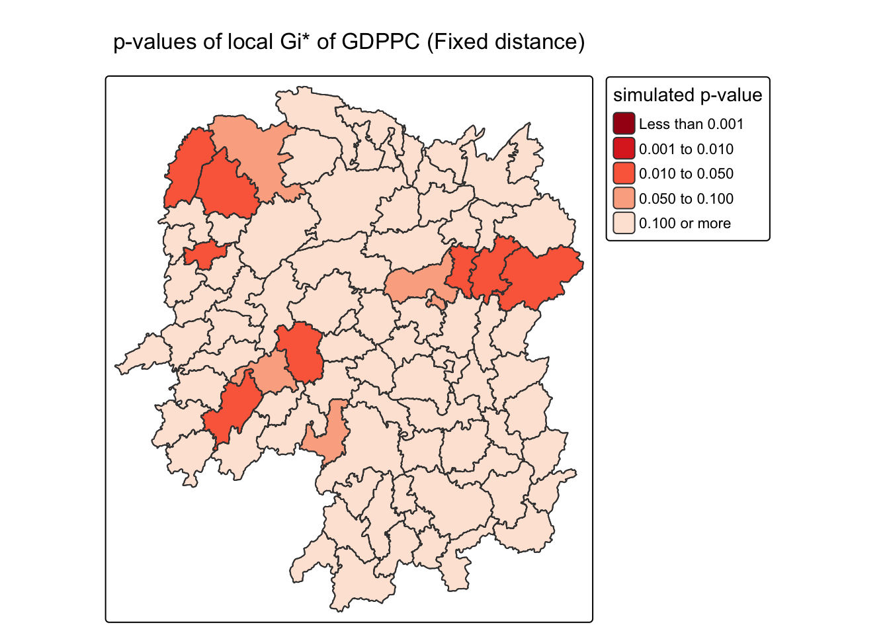
10.5.3.3 Mapping both Gi* values and p-values
Gi_star_map <- tm_shape(HCSA_fdw) +
tm_polygons(fill = "gi_star",
fill.scale = tm_scale_intervals(
style = "pretty",
n = 5,
values = "-brewer.rd_bu"),
fill.legend = tm_legend(
title = "local Gi*",
position = tm_pos_in(
"left", "bottom"))) +
tm_borders(fill_alpha = 0.5) +
tm_title("Local Gi* of GDPPC")
p_values_map <- tm_shape(HCSA_fdw) +
tm_polygons(fill = "p_sim",
fill.scale = tm_scale_intervals(
breaks = c(0, 0.001, 0.01, 0.05, 0.1, 1),
values = "-brewer.reds"),
fill.legend = tm_legend(
title = "p-value",
position = tm_pos_in("left", "bottom")
)) +
tm_borders(fill_alpha = 0.5) +
tm_title("p-values of local Gi* of GDPPC (fixed distance)")
tmap_arrange(Gi_star_map, p_values_map, asp=1, ncol=2)[scale] tm_polygons:() the data variable assigned to 'fill' contains positive and negative values, so midpoint is set to 0. Set 'midpoint = NA' in 'fill.scale = tm_scale_intervals(<HERE>)' to use all visual values (e.g. colors)[plot mode] fit legend/component: Some legend items or map compoments do not
fit well, and are therefore rescaled.
ℹ Set the tmap option `component.autoscale = FALSE` to disable rescaling.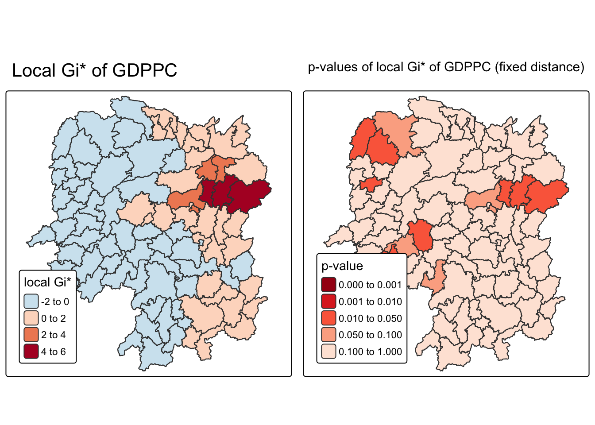
10.5.3.4 Plotting and visualising HCSA Map
HCSA_fdw <- HCSA_fdw %>%
mutate(HCSA_cluster = case_when(
p_sim > 0.05 ~ "Insignificant",
p_sim <= 0.05 & cluster == "High" ~ "Hot spot",
p_sim <= 0.05 & cluster == "Low" ~ "Cold spot",
TRUE ~ "Other"),
HCSA_cluster = factor(
HCSA_cluster,
levels = c("Insignificant", "Hot spot", "Cold spot")
),
.before = 1
)HCSA_map <- tm_shape(HCSA_fdw) +
tm_polygons(
fill = "HCSA_cluster",
fill.scale = tm_scale_categorical(
values = c(
"grey80", # Insignificant
"red", # Low-Low
"blue" # High-High
)
),
fill.legend = tm_legend(
title = "HSCA Cluster",
position = tm_pos_in("left", "bottom"))
) +
tm_borders() +
tm_title("HCSA Clusters (p < 0.05)")
HCSA_map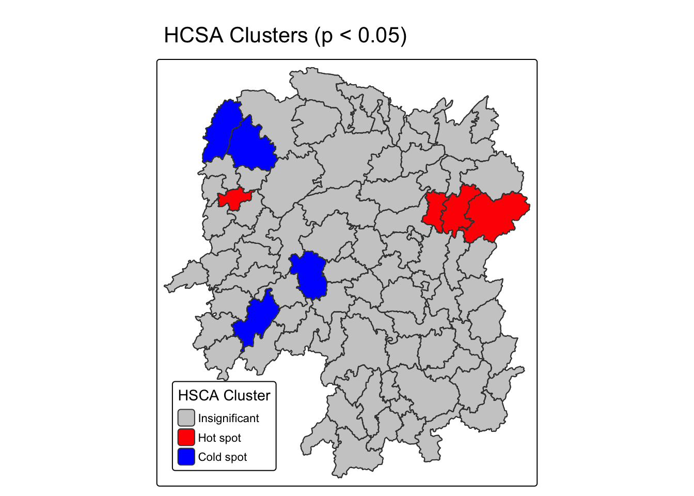
tmap_arrange(Gi_star_map, HCSA_map, asp=1, ncol=2)[scale] tm_polygons:() the data variable assigned to 'fill' contains positive and negative values, so midpoint is set to 0. Set 'midpoint = NA' in 'fill.scale = tm_scale_intervals(<HERE>)' to use all visual values (e.g. colors)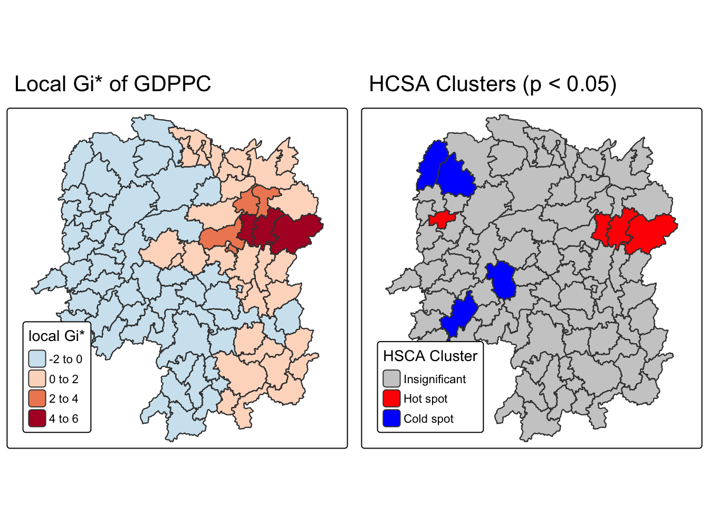